You can choose one or two rulesets (default). Press "Remove second ruleset" checkbox to remove the second ruleset. Dropdowns and sliders remain but the second ruleset will be removed. I would advise doing this initially to experiment with just one to see what happens.
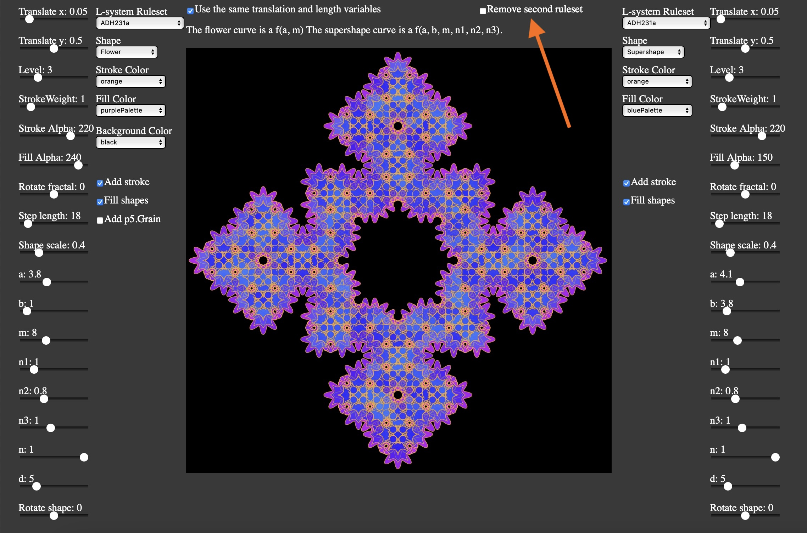
With two L-systems, the pattern created will depend on the order in which they are rendered. For example, if you switch the order you will not see the "supershape" L-system. If you decease the alpha on the "flower" L-system and change the parameters slightly it will become visable again. I adjusted the color palettes to make the supershape L-system more visable.You will notice that there was a BIG change in the pattern despite the relatively small change in parameters.
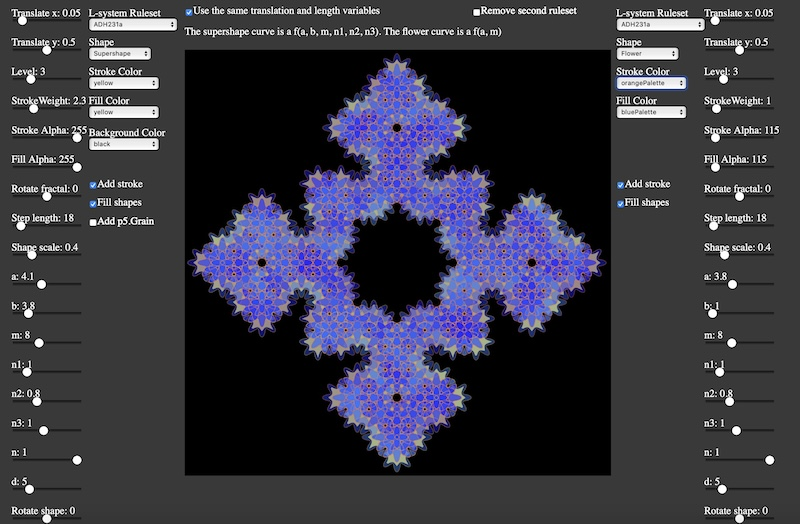
There are a large number of rulesets to choose from, including the Koch, Hilbert, the dragon rulesets, and--my personal favorite--one called ADH231a. The ruleset data is contained in the ruleset.jsonfile.
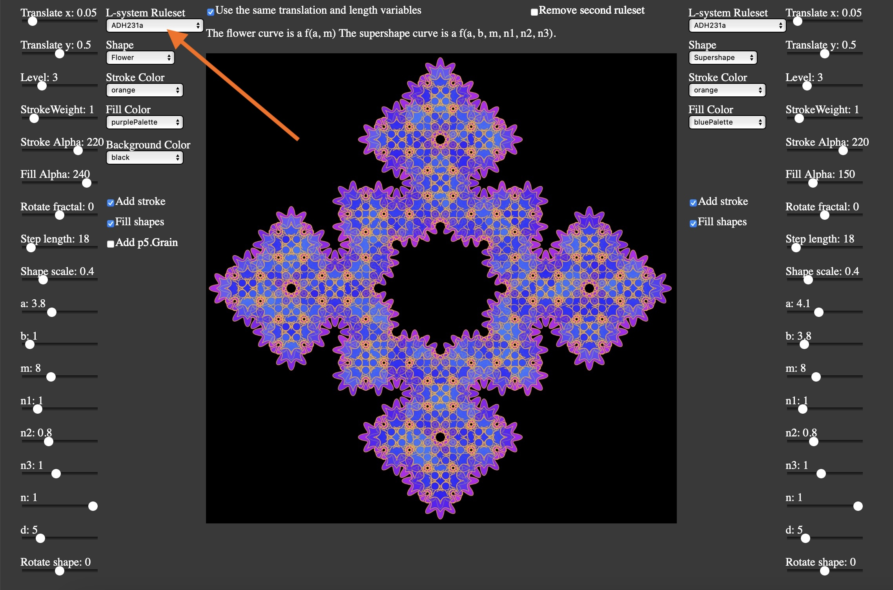
Here is an example of what the data looks like for the ADH231a ruleset.
The turtle system is like a game you may have played as a child called "Simon Says." The axiom (in this case "FX") is the starting point, and the rules tell the computer exactly what to. Here is a list of the symbols and what they tell the computer to do.
You can find more detailed information about the individual rulesets here.
If we change to the Skierpinksi rule-set, you will see that the pattern looks completely different. It is also not in the right place! What is happening? This is where we need to introduce the concept of translations.
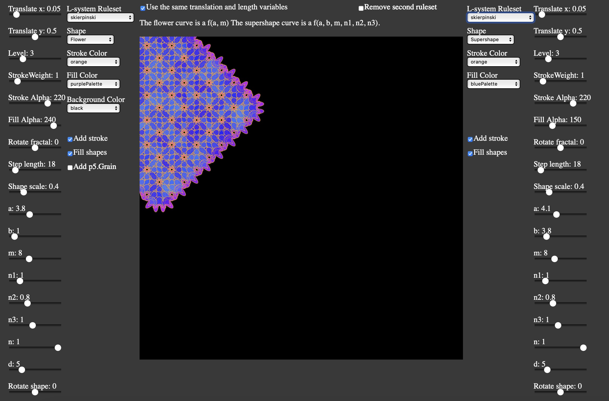
As explained in the documentation, by default the origin of the coordinate system in p5.js is the top-left corner of the canvas. While some of the the rule-sets start in the top-left corner, the majority do not. (You can see the starting points for the rulesets here, where the start is marked by a red circle.) For example, the ruleset we have been looking at--ADH231a--starts in the middle of the left boundary of the canvas. Therefore, if the ruleset is changed, the origin of the canvas needs to be adjusted using the "Translate x" and "Translate y" sliders. Behind the scenes, the code is using translate() function (turtle.js, line 168). The translation is a percentage of the canvas width and height so that the code doesn't break for different canvas sizes.
translate(width * wadj, height * hadj);
We can see the starting point (red circle) for the Skierpinksi ruleset in the following image.
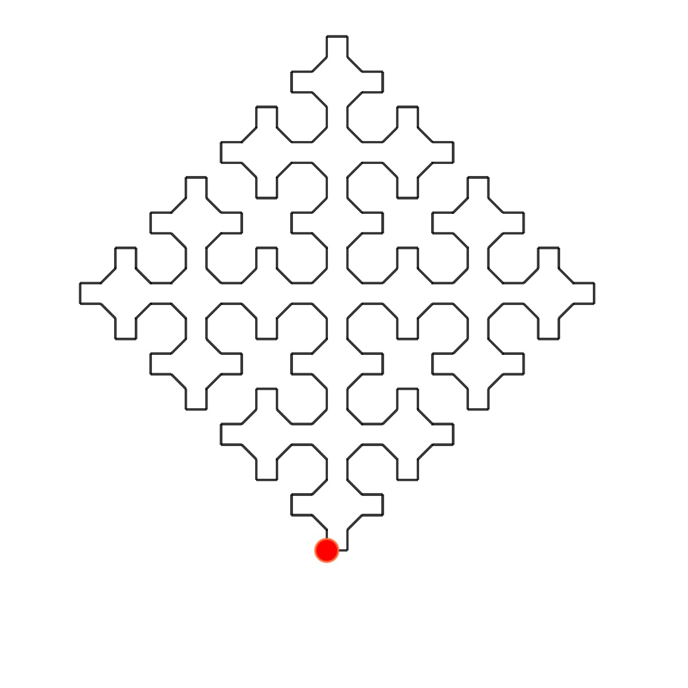
Looking at the image, it looks like the ruleset begins roughly half-way across the width of the canvas and almost at the bottom. If we change the "Translate x" slider to 0.49 and the "Translate y" slider to 0.9, the L-system is now properly centered.
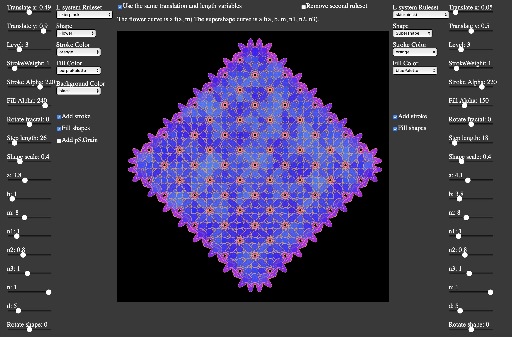
The shape size r will have a huge impact on what the pattern looks like. I have adjusted the size of the flower. (While I call it scale, I am not using the p5.scale() function.) It is defined in the shape_ui.js file as a percentage of the grid length. (See the selectShape() function.) In the following two images, I have adjusted the size of the flower using the "Shape Scale" slider.
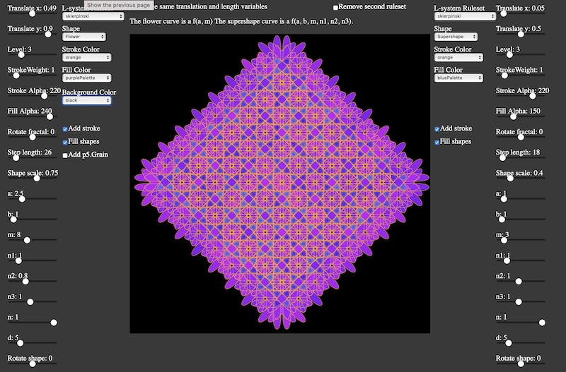
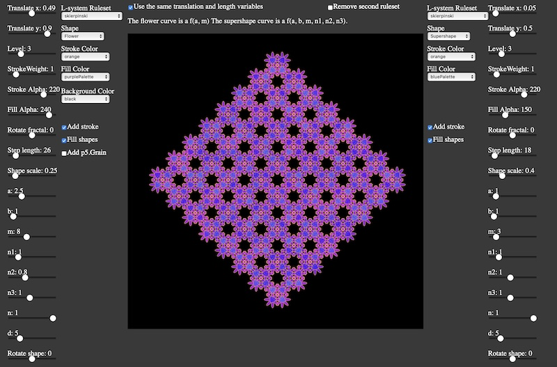
If you are unfamiliar with transformations and would like to learn more, I recommmend watching Daniel Shiffman's tutorial on the subject.
When there are two L-systems, three variables (x and y translation and grid length) can be kept the same (default) for the two L-systems, but you also have the option of making them independent. I have found that you can create some nice patterns with different shapes added to the same ruleset, and therefore it is best to keep those 3 variables synchronized, as shown in the image.
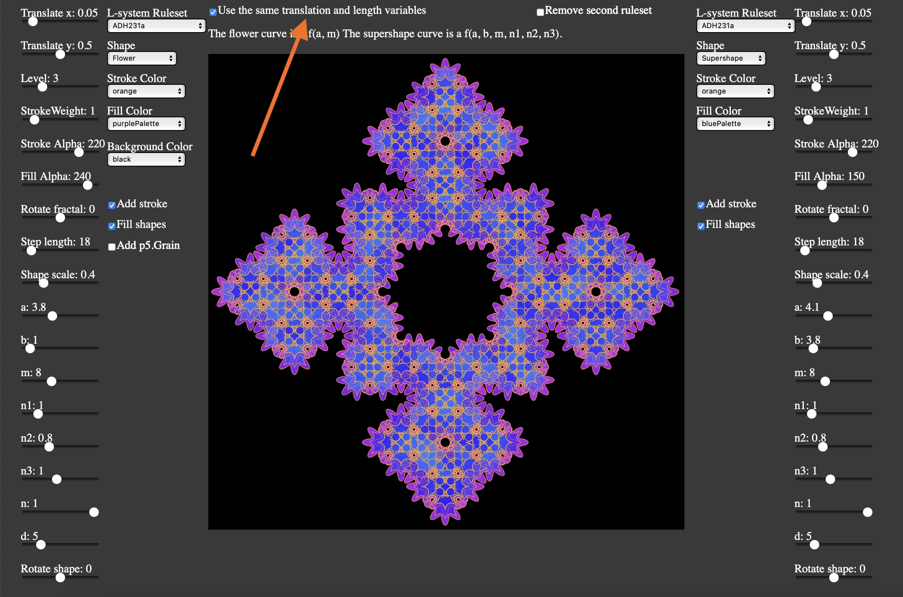
In the following image, "Translate x" is not synchronized.
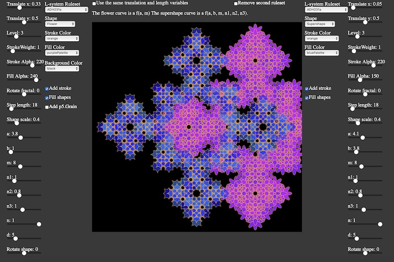
There are a large number of polar curves or shapes to choose from, including the gear, supershape, and heart curves and various spirals. You can learn more about the polar curves here. The code for the shapes can be found in the shapes.jsfile.
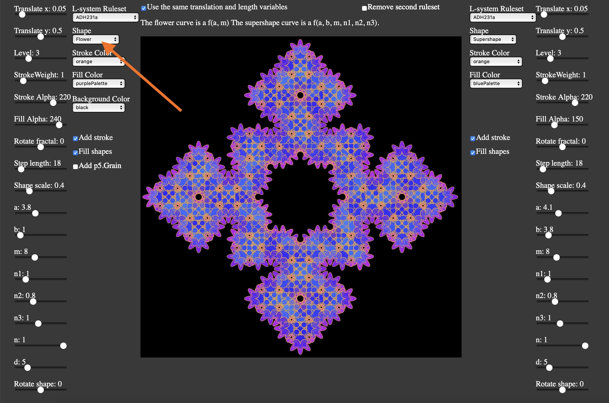
Because the shapes are layering over top of each other, I have found it generally best to keep the alpha on the lower side (150 is good).